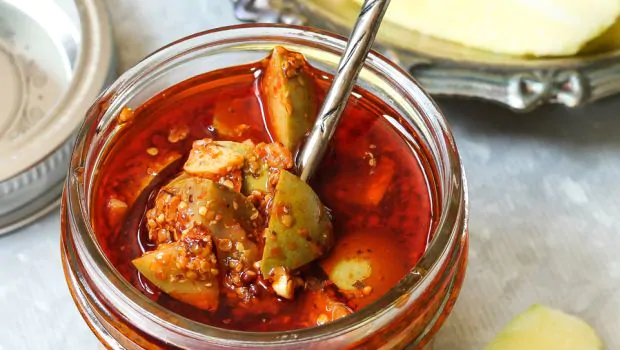

Indian Pickle
Pickles in India
Recipe
1 cup Tindora (Dondakaya/ Kovakkai) , finely chopped
1 teaspoon Red chilli powder
1/4 teaspoon Split Methi Seeds (Methi Kuria)
1/2 teaspoon Split Mustard Seeds (Rai Kuria)
1/4 teaspoon Turmeric powder (Haldi)
1/4 teaspoon Asafoetida (hing)
1 tablespoon Cooking oil
Lemon , juice extracted
Salt , to taste)
